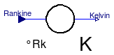
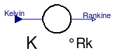
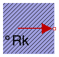
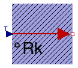
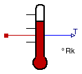

The components of this package are provided for the convenience of people working mostly with Rankine units, since all models in package HeatTransfer are based on Kelvin units.
Note, that in package SIunits.Conversions, functions are provided to convert between the units Kelvin, degree Celsius, degree Fahrenheit and degree Rankine. These functions allow, e.g., a direct conversion of units at all places where Kelvin is required as parameter. Example:
import SIunits.Conversions.*;
Modelica.Thermal.HeatTransfer.HeatCapacitor C(T0 = from_degRk(500));
Extends from Modelica.Icons.Library2 (Icon for library where additional icon elements shall be added).
| Name | Description |
|---|---|
| Conversion block from °Rankine to Kelvin | |
| Conversion from Kelvin to °Rankine | |
| Fixed temperature boundary condition in °Rankine | |
| Variable temperature boundary condition in °Rankine | |
| Absolute temperature sensor in °Rankine |

This component converts all input signals from degree Rankine to Kelvin and provides them as output signals.
| Type | Name | Default | Description |
|---|---|---|---|
| Integer | n | 1 | Number of inputs (= number of outputs) |
| Type | Name | Description |
|---|---|---|
| input RealInput | Rankine | |
| output RealOutput | Kelvin |
model ToKelvin "Conversion block from °Rankine to Kelvin" parameter Integer n=1 "Number of inputs (= number of outputs)"; Modelica.Blocks.Interfaces.RealInput Rankine; Modelica.Blocks.Interfaces.RealOutput Kelvin; equation Kelvin = from_degRk(Rankine); end ToKelvin;

This component converts all input signals from Kelvin to Rankine and provides them as output signals.
| Type | Name | Default | Description |
|---|---|---|---|
| Integer | n | 1 | Number of inputs (= number of outputs) |
| Type | Name | Description |
|---|---|---|
| input RealInput | Kelvin | |
| output RealOutput | Rankine |
model FromKelvin "Conversion from Kelvin to °Rankine" parameter Integer n=1 "Number of inputs (= number of outputs)"; Modelica.Blocks.Interfaces.RealInput Kelvin; Modelica.Blocks.Interfaces.RealOutput Rankine; equation Rankine = to_degRk(Kelvin); end FromKelvin;

This model defines a fixed temperature T at its port in degree Rankine, [degRk], i.e., it defines a fixed temperature as a boundary condition.
| Type | Name | Default | Description |
|---|---|---|---|
| Temperature_degRk | T | Fixed Temperature at the port [degRk] |
| Type | Name | Description |
|---|---|---|
| HeatPort_b | port |
model FixedTemperature
"Fixed temperature boundary condition in °Rankine"
parameter Modelica.SIunits.Conversions.NonSIunits.Temperature_degRk T
"Fixed Temperature at the port";
Interfaces.HeatPort_b port;
equation
port.T = from_degRk(T);
end FixedTemperature;
 Modelica.Thermal.HeatTransfer.Rankine.PrescribedTemperature
Modelica.Thermal.HeatTransfer.Rankine.PrescribedTemperature
This model represents a variable temperature boundary condition The temperature value in degree Rankine, [degRk] is given by the input signal to the model. The effect is that an instance of this model acts as an infinite reservoir able to absorb or generate as much energy as required to keep the temperature at the specified value.
| Type | Name | Description |
|---|---|---|
| HeatPort_b | port | |
| input RealInput | T |
model PrescribedTemperature "Variable temperature boundary condition in °Rankine" Interfaces.HeatPort_b port; Modelica.Blocks.Interfaces.RealInput T; equation port.T = from_degRk(T); end PrescribedTemperature;

This is an ideal absolute temperature sensor which returns the temperature of the connected port in Rankine as an output signal. The sensor itself has no thermal interaction with whatever it is connected to. Furthermore, no thermocouple-like lags are associated with this sensor model.
| Type | Name | Description |
|---|---|---|
| output RealOutput | T | |
| HeatPort_a | port |
model TemperatureSensor "Absolute temperature sensor in °Rankine" Modelica.Blocks.Interfaces.RealOutput T; Interfaces.HeatPort_a port; equation T = to_degRk(port.T); port.Q_flow = 0; end TemperatureSensor;